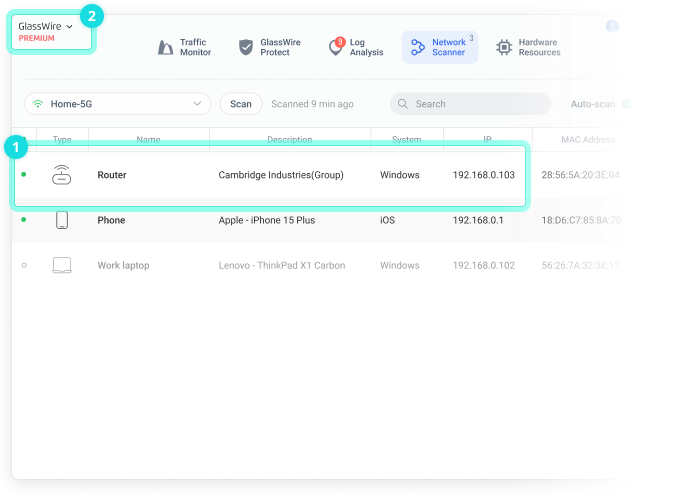

GlassWire 为什么能把你的网络画成心电图？
从 ETW 追踪到用户态解析，拆解 GlassWire 实时流量曲线背后的采集管道、设备发现策略，以及这套设计的代价与边界
一个反常的安全工具
我用过不少安全软件——卡巴斯基、火绒、Windows Defender 自带的防火墙。它们有一个共同点：尽量静默。弹窗越少越好，后台默默拦截就够了。
GlassWire官网反其道而行之。它的主界面不是拦截日志，而是一条实时动画曲线——入站出站叠加成一条，像心电图一样上下起伏。带宽尖峰出现时曲线会暴涨、闪烁一下，把"哪个 App 在猛跑流量"用视觉直接拍在你脸上。这还不够，它还能扫局域网设备、弹出世界地图动画、在新设备加入 Wi-Fi 时通知你。
为什么一个防火墙要把网络行为变成可视化界面？为什么它不跟着行业一起静默？
第一层：流量从哪抓的——ETW 管道
要画实时曲线，前提是拿到每个进程的入站出站字节数，而且得是流式的，不能等一分钟汇总一次。这在 Windows 上不是举手之劳。
传统做法有两种：在 Winsock 层 Hook send/recv，或者用 NDIS 驱动直接截获网卡包。前者简单但容易被绕过（应用可以直接走 WinHTTP），后者可靠但写驱动门槛极高，还得每个系统版本都适配签名。
GlassWire 选的是第三条路——ETW（Event Tracing for Windows）。这是 Windows 内核自带的事件追踪机制，从 Vista 开始就有，但直到 Win10 才被广泛用上。它的优势是：不需要写驱动（内核层已经实现了）、事件量可控（内核直接过滤只发网络事件）、延迟低（微秒级），而且应用绕不过——不管它走 Winsock、WinHTTP 还是直接 socket，内核都会吐事件出来。
但 ETW 也有它的脾气。GlassWire 需要订阅 Microsoft-Windows-Kernel-Network 这个 Provider，拿到每个 TCP/UDP 连接的事件（新建、数据传输、关闭），然后在用户态把原始二进制事件解析成结构化数据——哪个 PID、哪个方向、多少字节、对端 IP 是哪个。这个解析层才是真正的脏活累活：ETW 的事件格式是版本化的，Win10 21H2 和 Win11 22H2 的字段可能不一样；某些事件只有在特定 Group Policy 开启时才吐。GlassWire文档里没写这些细节，但从它偶尔需要管理员权限才能完整采集来看，它确实在啃这层硬骨头。
解析完之后，数据还要走一层聚合——按进程（PID 映射到进程名）、按 Host（IP 反查域名 + 国家归属）、按时间桶（默认 1 秒粒度），最后喂给渲染层。整条管道不能丢事件、不能延迟太大，否则曲线就会断档。这也是为什么 GlassWire 刚装完会占一些 CPU——ETW 事件是持续不断的，解析和聚合要实时跑。

第二层：设备从哪扫的——ARP 广播 + MAC 前缀 + 被动监听
Network Scanner 是另一个有意思的设计。同网段设备发现，最直接的方式就是 ARP 广播——向 192.168.1.0/24 发一轮 ARP Request，谁在线谁就回。GlassWire 的文档里写了它能扫到路由器、手机、智能音箱、扫地机器人、NAS，甚至游戏机，准确率相当高。
单纯 ARP 广播有两个已知缺陷。一是某些设备在 ARP 表缓存还新鲜的时候不会重复回应——GlassWire 需要在设备消失时主动做"过期探测"，不然列表里会留僵尸条目。二是厂商识别依赖 MAC 前缀数据库，这个库是静态的，新网卡出来时就识别不了。GlassWire 的做法看起来是三层叠加：主动 ARP 扫一次打底、后台被动监听 ARP 流量（别人发的请求和回应也听着，补全那些不回应主动扫的设备）、MAC 前缀匹配 + 厂商名字典。文档里提到的"连接时间"字段，就是被动监听层才知道的信息——主动扫只能扫到"此刻在线"，但被动监听能记下来"什么时候第一次见到这个设备"。
这套设计的取舍也很明显：ARP 是明文的，任何设备都能伪造 MAC，恶意设备可以冒充已知设备混进列表——GlassWire 没有做签名验证，纯靠 MAC 前缀匹配来推断厂商。还有，跨 VLAN 的设备扫不到，这不是 bug 是设计限制——ARP 不会跨三层交换机转发。文档里明确说了"不在同一网段的设备扫不到"，但没解释为什么，这其实就是 ARP 的天然边界。

第三层：为什么要可视化——产品定位的反转
把 ETW 管道和 ARP 扫描堆起来，得到的只是一堆结构化数据——进程名、字节数、IP 地址、厂商名字符串。把这些数据变成动画曲线、世界地图、设备列表，其实是 GlassWire 跟传统安全软件在产品定位上的分野。
传统防火墙假设用户不想知道网络细节，只想要"拦截威胁"这个结果。GlassWire 假设用户想知道"我的电脑在跟谁说话"——这两个假设导致了完全不同的界面。v3.3 版本把标签从 Security 改成 GlassWire Protect、把 Things 改成 Network Scanner、新增了 Map 视图和 Log Analysis，不是简单的重命名，是整个产品定位从"安全工具"转向"网络行为可视化"的重构。
这层设计也带来了明显的代价。第一，系统层 Hook 的兼容性——GlassWire 跟其他也用 ETW 或 NDIS 的软件可能冲突，文档里专门有一节排查防火墙冲突。第二，远程监控的脆弱性——它用 TCP 端口监听，容易被云安全组、Windows 防火墙、VPN 隧道挡住，文档里光是远程连接失败排查就写了五六个层级的步骤。第三，权限依赖——ETW 某些 Provider 需要管理员权限才能完整订阅，没有管理员权限时 GlassWire 只能拿到部分事件，曲线可能不完整。想亲自体验这套可视化管道的话，可以下载来试试。
这套设计意味着什么
GlassWire 适合两类人。一类是技术玩家——想知道自己的电脑到底在跟哪些服务器通信、哪些应用在偷偷跑流量、局域网里有没有蹭网的设备，它的可视化界面比任何命令行工具都直观。另一类是小团队的运维——远程监控功能让一台 GlassWire 客户端就能看到多台服务器的流量曲线，世界地图能快速定位"哪个国家的连接突然多了"。
但它不适合当唯一的安全防线。它不做病毒查杀、不做 exploit 防护、不做浏览器沙箱——这些都是传统杀软的领域。而且它的"可视化优先"设计意味着它会占用更多 CPU 和内存（ETW 事件解析是持续进程），对低配置设备不友好。
最后说一个小细节。GlassWire 刚装完的前几天，曲线会到处飘着 "New" 标签——那是它第一次见到的应用联网事件。随着使用时间增加，它会逐渐"认识"你电脑上的应用，标签越来越少。这个"New" 机制其实就是 ETW 事件里的 PID 映射 + 本地缓存——它把见过的进程名存在本地，下次再见到就不标 New 了。这个小设计背后，也是整条 ETW 管道跑通之后才能实现的功能。
GlassWire官网能直接下载安装，首次安装就能看到那条标志性的流量曲线。进阶的用法和参数配置在中文文档里有更详细的说明，比如远程监控的端口怎么开、防火墙规则怎么配。
如果你也好奇自己的网络到底在做什么，这套设计值得一试——毕竟，能把网络行为画成心电图的软件，市面上真的不多。这套资料也在GitHub、Gitee、GitCode三个仓库同步维护着，方便不同网络环境下查阅。